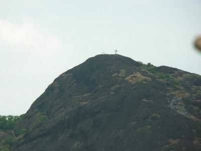

Idukki district is a densely forested, mountainous region in the south Indian state of Kerala.
In the north, Anamudi mountain towers over Eravikulam National Park, where the rare, blue Neelakurinji
flower blooms every 12 years. Nearby, Munnar is a hill station known for its sprawling tea plantations
and Tea Museum.
Hill view Park

With spectacular views of the Cheruthoni and Idukki Dams, the Hill-view Park serves as a famous tourist destination of Idukki. One can also spot diverse wildlife in its belt natural habitat.
Kulamavu Dam

If you're a hiking or trekking junkie, Kulamavu is a hill-station that offers the perfect terrain for an adrenaline kick. With some amazing trekking trails, the place is also adorned with equally enchanting surroundings.
nadukani

Another hill station situated 25 km from Idukki, Nadukani offers a bewitching view of the mountains, Muvattupuzha River- a unique place in Kerala where three rivers meet, and many rare species of fauna are also found here.